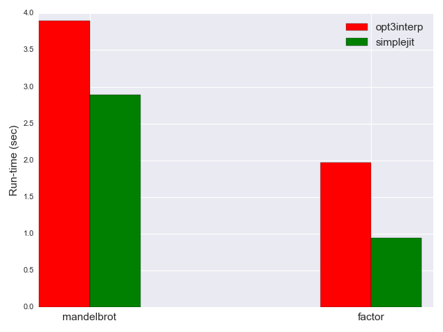
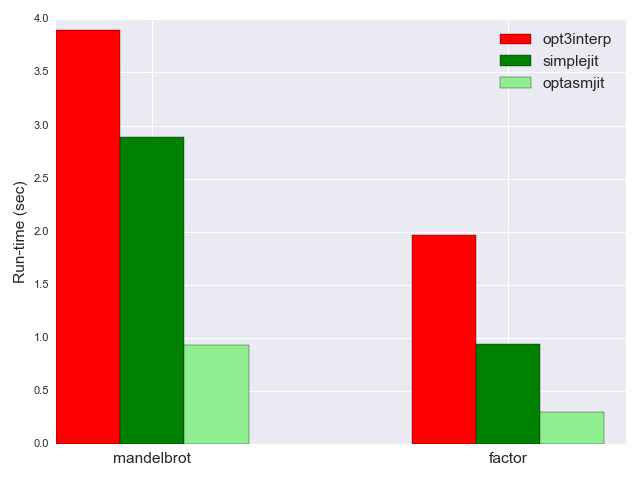
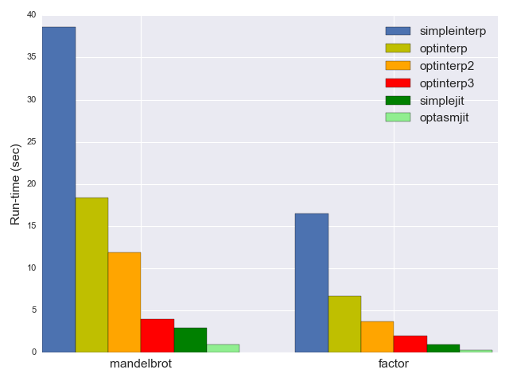

In the first part of the series I've briefly introduced the BF source language and went on to present four interpreters with increasing degree of optimization. That post should serve as a good backgroud before diving into actual JIT-ing.
Another important part of the background puzzle is my How to JIT - an introduction post from 2013; there, I discuss some of the basic tools needed to emit executable x64 machine code at run-time and actually run it on Linux. Please go through it quickly if these things are new to you.
The two phases of JIT
As I wrote previously, the JIT technique is easier to understand when divided into two distinct phases:
- Create machine code at program run-time.
- Execute that machine code, also at program run-time.
Phase 2 for our BF JIT is exactly identical to the method described in that introductory post. Take a look at the JitProgram class in jit_utils for details. We'll be more focused on phase 1, which will be translating BF to x64 machine code; per the definition quoted in part 1 of the series, we're going to develop an actual BF compiler (compiling from BF source to x64 machine code).
Compilers, assemblers and instruction encoding
Traditionally, compilation was divided into several stages. The actual source language compiler would translate some higher-level language to target-specific assembly; then, an assembler would translate assembly to actual machine code [1]. There's a number of important benefits assembly language provides over raw machine code. Salient examples include:
- Instruction encoding: it's certainly nicer to write inc %r13 to increment the contents of register r13 than to write 0x49, 0xFF, 0xC5. Instruction encoding for the popular architectures is notoriously complicated.
- Naming labels and procedures for jumps/calls: it's easier to write jl loop than to figure out the encoding for the instruction, along with the relative position of the loop label and encoding the delta to it (not to mention this delta changes every time we add instructions in between and needs to be recomputed). Similarly for functions, call foo instead of doing it by address.
One of my guiding principles through the field of programming is that before diving into the possible solutions for a problem (for example, some library for doing X) it's worth working through the problem manually first (doing X by hand, without libraries). Grinding your teeth over issues for a while is the best way to appreciate what the shrinkwrapped solution/library does for you.
In this spirit, our first JIT is going to be completely hand-written.
Simple JIT - hand-rolling x64 instruction encoding
Out first JIT for this post is simplejit.cpp. Similarly to the interpreters of part 1, all the action happens in a single function (here called simplejit) invoked from main. simplejit goes through the BF source and emits x64 machine code into a memory buffer; in the end, it jumps to this machine code to run the BF program.
Here's its beginning:
std::vector<uint8_t> memory(MEMORY_SIZE, 0);
// Registers used in the program:
//
// r13: the data pointer -- contains the address of memory.data()
//
// rax, rdi, rsi, rdx: used for making system calls, per the ABI.
CodeEmitter emitter;
// Throughout the translation loop, this stack contains offsets (in the
// emitter code vector) of locations for fixup.
std::stack<size_t> open_bracket_stack;
// movabs <address of memory.data>, %r13
emitter.EmitBytes({0x49, 0xBD});
emitter.EmitUint64((uint64_t)memory.data());
As usual, we have our BF memory buffer in a std::vector. The comments reveal some of the conventions used througout the emitted program: our "data pointer" will be in r13.
CodeEmitter is a very simple utility to append bytes and words to a vector of bytes. Its full code is here. It's platform independent except the assumption of little-endian (for EmitUint64 it will write the lowest byte of the 64-bit word first, then the second lowest byte, etc.)
Our first bit of actual machine code emission follows:
// movabs <address of memory.data>, %r13
emitter.EmitBytes({0x49, 0xBD});
emitter.EmitUint64((uint64_t)memory.data());
And it's a cool one, mixing elements from the host (the C++ program doing the emission) and the JITed code. First note the usage of movabs, a x64 instruction useful for placing 64-bit immediates in a register. This is exactly what we're doing here - placing the address of the data buffer of memory in r13. The call to EmitBytes with a cryptic sequence of hex values is preceded by a snippet of assembly in a comment - the assembly conveys the meaning for human readers, the hex values are the actual encoding the machine will understand.
Then comes the BF compilation loop, which looks at the next BF instruction and emits the appropriate machine code for it. Our compiler works in a single pass; this means that there's a bit of trickiness in handling the jumps, as we will soon see.
for (size_t pc = 0; pc < p.instructions.size(); ++pc) {
char instruction = p.instructions[pc];
switch (instruction) {
case '>':
// inc %r13
emitter.EmitBytes({0x49, 0xFF, 0xC5});
break;
case '<':
// dec %r13
emitter.EmitBytes({0x49, 0xFF, 0xCD});
break;
case '+':
// Our memory is byte-addressable, so using addb/subb for modifying it.
// addb $1, 0(%r13)
emitter.EmitBytes({0x41, 0x80, 0x45, 0x00, 0x01});
break;
case '-':
// subb $1, 0(%r13)
emitter.EmitBytes({0x41, 0x80, 0x6D, 0x00, 0x01});
break;
These are pretty straightforward; since r13 is the data pointer, > and < increment and decrement it, while + and - increment and decrement what it's pointing to. One slightly subtle aspect is that I chose a byte-value memory for our BF implementations; this means we have to be careful when reading or writing to memory and do byte-addressing (the b suffixes on add and sub above) rather than the default 64-bit-addressing.
The code emitted for . and , is a bit more exciting; in the effort of avoiding any external dependencies, we're going to invoke Linux system calls directly. WRITE for .; READ for ,. We're using the x64 ABI here with the syscall identifier in rax:
// To emit one byte to stdout, call the write syscall with fd=1 (for
// stdout), buf=address of byte, count=1.
//
// mov $1, %rax
// mov $1, %rdi
// mov %r13, %rsi
// mov $1, %rdx
// syscall
emitter.EmitBytes({0x48, 0xC7, 0xC0, 0x01, 0x00, 0x00, 0x00});
emitter.EmitBytes({0x48, 0xC7, 0xC7, 0x01, 0x00, 0x00, 0x00});
emitter.EmitBytes({0x4C, 0x89, 0xEE});
emitter.EmitBytes({0x48, 0xC7, 0xC2, 0x01, 0x00, 0x00, 0x00});
emitter.EmitBytes({0x0F, 0x05});
break;
case ',':
// To read one byte from stdin, call the read syscall with fd=0 (for
// stdin),
// buf=address of byte, count=1.
emitter.EmitBytes({0x48, 0xC7, 0xC0, 0x00, 0x00, 0x00, 0x00});
emitter.EmitBytes({0x48, 0xC7, 0xC7, 0x00, 0x00, 0x00, 0x00});
emitter.EmitBytes({0x4C, 0x89, 0xEE});
emitter.EmitBytes({0x48, 0xC7, 0xC2, 0x01, 0x00, 0x00, 0x00});
emitter.EmitBytes({0x0F, 0x05});
break;
The comments certainly help, don't they? I hope these snippets are a great motivation for using assembly language rather than encoding instructions manually :-)
The jump instructions are always the most interesting in BF. For [ we do:
case '[':
// For the jumps we always emit the instruciton for 32-bit pc-relative
// jump, without worrying about potentially short jumps and relaxation.
// cmpb $0, 0(%r13)
emitter.EmitBytes({0x41, 0x80, 0x7d, 0x00, 0x00});
// Save the location in the stack, and emit JZ (with 32-bit relative
// offset) with 4 placeholder zeroes that will be fixed up later.
open_bracket_stack.push(emitter.size());
emitter.EmitBytes({0x0F, 0x84});
emitter.EmitUint32(0);
break;
Note that we don't know where this jump leads at this point - it will go to the matching ], which we haven't encountered yet! Therefore, to keep our compilation in a single pass [2] we use the time-honored technique of backpatching by emitting a placeholder value for the jump and fixing it up once we encounter the matching label. Another thing to note is always using a 32-bit pc-relative jump, for simplicity; we could save a couple of bytes with a short jump in most cases (see my article on assembler relaxation for the full scoop), but I don't think it's worth the effort here.
Compiling the matching ] is a bit trickier; I hope the comments do a good job explaining what's going on, and the code itself is optimized for readability rather than cleverness:
case ']': {
if (open_bracket_stack.empty()) {
DIE << "unmatched closing ']' at pc=" << pc;
}
size_t open_bracket_offset = open_bracket_stack.top();
open_bracket_stack.pop();
// cmpb $0, 0(%r13)
emitter.EmitBytes({0x41, 0x80, 0x7d, 0x00, 0x00});
// open_bracket_offset points to the JZ that jumps to this closing
// bracket. We'll need to fix up the offset for that JZ, as well as emit a
// JNZ with a correct offset back. Note that both [ and ] jump to the
// instruction *after* the matching bracket if their condition is
// fulfilled.
// Compute the offset for this jump. The jump start is computed from after
// the jump instruction, and the target is the instruction after the one
// saved on the stack.
size_t jump_back_from = emitter.size() + 6;
size_t jump_back_to = open_bracket_offset + 6;
uint32_t pcrel_offset_back =
compute_relative_32bit_offset(jump_back_from, jump_back_to);
// jnz <open_bracket_location>
emitter.EmitBytes({0x0F, 0x85});
emitter.EmitUint32(pcrel_offset_back);
// Also fix up the forward jump at the matching [. Note that here we don't
// need to add the size of this jmp to the "jump to" offset, since the jmp
// was already emitted and the emitter size was bumped forward.
size_t jump_forward_from = open_bracket_offset + 6;
size_t jump_forward_to = emitter.size();
uint32_t pcrel_offset_forward =
compute_relative_32bit_offset(jump_forward_from, jump_forward_to);
emitter.ReplaceUint32AtOffset(open_bracket_offset + 2,
pcrel_offset_forward);
break;
}
This concludes the compiler loop; we end up with a bunch of potentially executable machine code in vector. This code refers to the host program (the address of memory.data()), but that's OK since the host program's lifetime wraps the lifetime of the JITed code. What's remaining is to actually invoke this machine code:
// ... after the compilation loop
// The emitted code will be called as a function from C++; therefore it has to
// use the proper calling convention. Emit a 'ret' for orderly return to the
// caller.
emitter.EmitByte(0xC3);
// Load the emitted code to executable memory and run it.
std::vector<uint8_t> emitted_code = emitter.code();
JitProgram jit_program(emitted_code);
// JittedFunc is the C++ type for the JIT function emitted here. The emitted
// function is callable from C++ and follows the x64 System V ABI.
using JittedFunc = void (*)(void);
JittedFunc func = (JittedFunc)jit_program.program_memory();
func();
The call should be familiar from reading the How to JIT post. Note that here we opted for the simplest function possible - no arguments, no return value; in future sections we'll spice it up a bit.
Taking our JIT for a spin
In part 1, I presented a trivial BF program that prints the numbers 1 to 5 to the screen:
++++++++ ++++++++ ++++++++ ++++++++ ++++++++ ++++++++
>+++++
[<+.>-]
Let's see what our compiler translates it to. Even though the code vector inside simplejit is ephemeral (lives only temporarily in memory), we can serialize it to a binary file which we can then disassemble (with objdump -D -b binary -mi386:x86-64). The following is the disassembly listing with comments I embedded to explain what's going on:
# The runtime address of memory.data() goes into r13; note that this will
# likely be a different value in every invocation of the JIT.
0: 49 bd f0 54 e3 00 00 movabs $0xe354f0,%r13
7: 00 00 00
# A sequence of 48 instructions that all do the same, for the initial sequence
# of +s; this makes me miss our optimizing interpreter, by worry not - we'll
# make this go away later in the post.
a: 41 80 45 00 01 addb $0x1,0x0(%r13)
f: 41 80 45 00 01 addb $0x1,0x0(%r13)
# [...] 46 more 'addb'
# >+++++
fa: 49 ff c5 inc %r13
fd: 41 80 45 00 01 addb $0x1,0x0(%r13)
102: 41 80 45 00 01 addb $0x1,0x0(%r13)
107: 41 80 45 00 01 addb $0x1,0x0(%r13)
10c: 41 80 45 00 01 addb $0x1,0x0(%r13)
111: 41 80 45 00 01 addb $0x1,0x0(%r13)
# Here comes the loop! Note that the relative jump offset is already inserted
# into the 'je' instruction by the backpatching process.
116: 41 80 7d 00 00 cmpb $0x0,0x0(%r13)
11b: 0f 84 35 00 00 00 je 0x156
121: 49 ff cd dec %r13
124: 41 80 45 00 01 addb $0x1,0x0(%r13)
# The '.' is translated into a syscall to WRITE
129: 48 c7 c0 01 00 00 00 mov $0x1,%rax
130: 48 c7 c7 01 00 00 00 mov $0x1,%rdi
137: 4c 89 ee mov %r13,%rsi
13a: 48 c7 c2 01 00 00 00 mov $0x1,%rdx
141: 0f 05 syscall
143: 49 ff c5 inc %r13
146: 41 80 6d 00 01 subb $0x1,0x0(%r13)
14b: 41 80 7d 00 00 cmpb $0x0,0x0(%r13)
# Jump back to beginning of loop
150: 0f 85 cb ff ff ff jne 0x121
# We're done
156: c3 retq
How does it perform?
It's time to measure the performance of our JIT against the interpreters from part 1. optinterp3 was about 10x faster than the naive interpreter - how will this JIT measure up? Note that it has no optimizations (except not having to recompute the jump destination for every loop iteration as the naive interpreter did). Can you guess? The results may surprise you...
The simple JIT runs mandelbrot in 2.89 seconds, and factor in 0.94 seconds - much faster still than opt3interp; here's the comparison plot (omitting the slower interpreters since they skew the scale):
Why is this so? opt3interp is heavily optimized - it folds entire loops into a single operation; simplejit does none of this - we've just seen the embarrassing sequence of addbs it emits for a long sequence of +s.
The reason is that the baseline performance of the JIT is vastly better. I've mentioned this briefly in part 1 - imagine what's needed to interpret a single instruction in the fastest interpreter.
- Advance pc and compare it to program size.
- Grab the instruction at pc.
- Switch on the value of the instruction to the right case.
- Execute the case.
This requires a whole sequence of machine instructions, with at least two branches (one for the loop, one for the switch). On the other hand, the JIT just emits a single instruction - no branches. I would say that - depending on what the compiler did while compiling the interpreter - the JIT is between 4 and 8 times faster at running any given BF operation. It has to run many more BF operations because it doesn't optimize, but this difference is insufficient to close the huge baseline gap. Later in this post we're going to see an optimized JIT which performs even better.
But first, let's talk about this painful instruction encoding business.
Manually encoding instructions
As promised, simplejit is completely self-contained. It doesn't use any external libraries, and encodes all the instructions by hand. It's not hard to see how painful that process is, and the code is absolutely unreadable unless accompanied by detailed comments; moreover, changing the code is a pain, and changes happen in unexpected ways. For example, if we want to use some other register in an instruction, the change to emitted code won't be intuitive. add %r8, %r9 is encoded as 0x4C, 0x01, 0xC8, but add %r8, %r10 is 0x4C, 0x01, 0xD0; since registers are specified in sub-byte nibbles, one needs very good memory and tons of experience to predict what goes where.
Would you expect related instructions to look somewhat similar? They don't. inc %r13 is encoded as 0x49, 0xFF, 0xC0, for example. To put it bluntly - unless you're Mel, you're going to have a hard time. Now imagine that you have to support emitting code for multiple architectures!
This is why all compilers, VMs and related projects have their own layers to help with this encoding task, along with related tasks like labels and jump computations. Most are not exposed for easy usage outside their project; others, like DynASM (developed as part of the LuaJIT project) are packaged for separate usage. DynASM is an example of a low-level framework - providing instruction encoding and not much else; some frameworks are higher-level, doing more compiler-y things like register allocation. One example is libjit; another is LLVM.
asmjit
While looking for a library to help me encode instructions, I initially tried DynASM. It's an interesting approach - and you can see Josh Haberman's post about using it for a simple BF JIT, but I found it to be a bit too abandonware-ish for my taste. Besides, I don't like the funky preprocessor approach with a dependency on Lua.
So I found another project that seemed to fit the bill - asmjit - a pure C++ library without any preprocessing. asmjit began about 3 years ago to ease its author's development of fast kernels for graphics code. Its documentation isn't much better than dynasm's, but being just a C++ library I found it easier to dive into the source when questions arose the docs couldn't answer. Besides, the author is very active and quick in answering questions on GitHub and adding missing featuers. Therefore, the rest of this post shows BF JITs that use asmjit - these can also serve as a non-trivial tutorial for the library.
simpleasmjit - JIT with sane instruction encoding
Enter simpleasmjit.cpp - the same simple JIT (no optimizations) as simplejit, but using asmjit for the instruction encoding, labels and so on. Just for fun, we'll mix things up a bit. First, we'll change the JITed function signature from void (*)(void) to void (*)(uint64_t); the address of the BF memory buffer will be passed as argument into the JITed function rather than hard-coded into it.
Second, we'll use actual C functions to emit / input characters, rather than system calls. Moreover, since putchar and getchar may be macros on some systems, taking their address can be unsafe. So we'll wrap them in actual C++ functions, whose address it is safe to take in emitted code:
void myputchar(uint8_t c) {
putchar(c);
}
uint8_t mygetchar() {
return getchar();
}
simpleasmjit starts by initializing an asmjit runtime, code holder and assembler [3]:
asmjit::JitRuntime jit_runtime;
asmjit::CodeHolder code;
code.init(jit_runtime.getCodeInfo());
asmjit::X86Assembler assm(&code);
Next, we'll give a mnemonic name to our data pointer, and emit a copy of the address of the memory buffer into it (it's in rdi initially, as the first function argument in the x64 ABI):
// We pass the data pointer as an argument to the JITed function, so it's
// expected to be in rdi. Move it to r13.
asmjit::X86Gp dataptr = asmjit::x86::r13;
assm.mov(dataptr, asmjit::x86::rdi);
Then we get to the usual BF processing loop that emits code for every BF op:
for (size_t pc = 0; pc < p.instructions.size(); ++pc) {
char instruction = p.instructions[pc];
switch (instruction) {
case '>':
// inc %r13
assm.inc(dataptr);
break;
case '<':
// dec %r13
assm.dec(dataptr);
break;
case '+':
// addb $1, 0(%r13)
assm.add(asmjit::x86::byte_ptr(dataptr), 1);
break;
case '-':
// subb $1, 0(%r13)
assm.sub(asmjit::x86::byte_ptr(dataptr), 1);
break;
Notice the difference! No more obscure hex codes - assm.inc(dataptr) is so much nicer than 0x49, 0xFF, 0xC5, isn't it?
For input and output we emit calls to our wrapper functions:
case '.':
// call myputchar [dataptr]
assm.movzx(asmjit::x86::rdi, asmjit::x86::byte_ptr(dataptr));
assm.call(asmjit::imm_ptr(myputchar));
break;
case ',':
// [dataptr] = call mygetchar
// Store only the low byte to memory to avoid overwriting unrelated data.
assm.call(asmjit::imm_ptr(mygetchar));
assm.mov(asmjit::x86::byte_ptr(dataptr), asmjit::x86::al);
break;
The magic is in the imm_ptr modifier, which places the address of the function in the emitted code.
Finally, the code handling [ and ] is also much simpler due to asmjit's labels, which can be used before they're actually emitted:
case '[': {
assm.cmp(asmjit::x86::byte_ptr(dataptr), 0);
asmjit::Label open_label = assm.newLabel();
asmjit::Label close_label = assm.newLabel();
// Jump past the closing ']' if [dataptr] = 0; close_label wasn't bound
// yet (it will be bound when we handle the matching ']'), but asmjit lets
// us emit the jump now and will handle the back-patching later.
assm.jz(close_label);
// open_label is bound past the jump; all in all, we're emitting:
//
// cmpb 0(%r13), 0
// jz close_label
// open_label:
// ...
assm.bind(open_label);
// Save both labels on the stack.
open_bracket_stack.push(BracketLabels(open_label, close_label));
break;
}
case ']': {
if (open_bracket_stack.empty()) {
DIE << "unmatched closing ']' at pc=" << pc;
}
BracketLabels labels = open_bracket_stack.top();
open_bracket_stack.pop();
// cmpb 0(%r13), 0
// jnz open_label
// close_label:
// ...
assm.cmp(asmjit::x86::byte_ptr(dataptr), 0);
assm.jnz(labels.open_label);
assm.bind(labels.close_label);
break;
}
We just have to remember which label we used for the jump and emit the exact same Label object - asmjit handles the backpatching on its own! Moreover, all the jump offset computations are performed automatically.
Finally, after emitting the code we can call it:
using JittedFunc = void (*)(uint64_t);
JittedFunc func;
asmjit::Error err = jit_runtime.add(&func, &code);
// [...]
// Call it, passing the address of memory as a parameter.
func((uint64_t)memory.data());
That's it. This JIT emits virtually the same exact code as simplejit, and thus we don't expect it to perform any differently. The main point of this exercise is to show how much simpler and more pleasant emitting code is with a library like asmjit. It hides all the icky encoding and offset computations, letting us focus on what's actually unique for our program - the sequence of instructions emitted.
optasmjit - combining BF optimizations with a JIT
Finally, it's time to combine the clever optimizations we've developed in part 1 with the JIT. Here, I'm essentially taking optinterp3 from part 1 and bolting a JIT backend onto it. The result is optasmjit.cpp.
Recall that instead of the 8 BF ops, we have an extended set, with integer arguments, that conveys higher-level ops in some cases:
enum class BfOpKind {
INVALID_OP = 0,
INC_PTR,
DEC_PTR,
INC_DATA,
DEC_DATA,
READ_STDIN,
WRITE_STDOUT,
LOOP_SET_TO_ZERO,
LOOP_MOVE_PTR,
LOOP_MOVE_DATA,
JUMP_IF_DATA_ZERO,
JUMP_IF_DATA_NOT_ZERO
};
The translation phase from BF ops to a sequence of BfOpKind is exactly the same as it was in optinterp3. Let's take a look at how a couple of the new ops are implemented now:
case BfOpKind::INC_PTR:
assm.add(dataptr, op.argument);
break;
As before with the interpreters, an increment of 1 is replaced by the addition of an argument. We use a different instruction for this - add instead of inc [4]. How about something more interesting:
case BfOpKind::LOOP_MOVE_DATA: {
// Only move if the current data isn't 0:
//
// cmpb 0(%r13), 0
// jz skip_move
// <...> move data
// skip_move:
asmjit::Label skip_move = assm.newLabel();
assm.cmp(asmjit::x86::byte_ptr(dataptr), 0);
assm.jz(skip_move);
assm.mov(asmjit::x86::r14, dataptr);
if (op.argument < 0) {
assm.sub(asmjit::x86::r14, -op.argument);
} else {
assm.add(asmjit::x86::r14, op.argument);
}
// Use rax as a temporary holding the value of at the original pointer;
// then use al to add it to the new location, so that only the target
// location is affected: addb %al, 0(%r13)
assm.mov(asmjit::x86::rax, asmjit::x86::byte_ptr(dataptr));
assm.add(asmjit::x86::byte_ptr(asmjit::x86::r14), asmjit::x86::al);
assm.mov(asmjit::x86::byte_ptr(dataptr), 0);
assm.bind(skip_move);
break;
}
I'll just note again how much simpler this code is to write with asmjit than without it. Also note the careful handling of the byte-granulated data when touching memory - I ran into a number of nasty bugs when developing this. In fact, using the native machine word size (64 bits in this case) for BF memory cells would've made everything much simpler; 8-bit cells are closer to the common semantics of the language and provide an extra challenge.
Performance
Let's see how optasmjit fares against the fastest interpreter and the unoptimized JIT - 0.93 seconds for mandelbrot, 0.3 seconds for factor - another factor of 3 in performance:
Notably, the performance delta with the optimized interpreter is huge: the JIT is more than 4x faster. If we compare it all the way to the initial simple interpreter, optasmjit is about 40x faster - making it hard to even compare on the same chart :-)
JITs are fun!
I find writing JITs lots of fun. It's really nice to be able to hand-craft every instruction emitted by the compiler. While this is quite painful to do without any encoding help, libraries like asmjit make the process much more pleasant.
We've done quite a bit in this part of the series. optasmjit is a genuine optimizing JIT for BF! It:
- Parses BF source
- Translates it to a sequence of higher-level ops
- Optimizes these ops
- Compiles the ops to tight x64 assembly in memory and runs them
Let's connect these steps to some real compiler jargon. BfOpKind ops can be seen as the compiler IR. Translation of human-readable source code to IR is often the first step in compilation (though it in itself is sometimes divided into multiple steps for realistic languages). The translation/compilation of ops to assembly is often called "lowering"; in some compilers this involves multiple steps and intermediate IRs.
I left a lot of code out of the blog post - otherwise it would be huge! I encourage you to go back through the full source files discussed here and understand what's going on - every JIT is a single standalone C++ file.
Links to all posts in this series:
| [1] | I said traditionally because many modern compilers no longer work this way. For example, LLVM compiles IR to another, much lower-level IR that represents machine-code level instructions; assembly can be emitted from this IR, but also machine code directly - so the assembler is integrated into the compiler. |
| [2] | Some compilers would do two passes; this is similar to our first interpreter optimization in part 1: the first pass collects information (such as location of all matching ]s), so the second pass already knows what offsets to emit. |
| [3] | Please refer to asmjit's documentation for the full scoop. I'll also mention that asmjit has a "compiler" layer which does more sophisticated things like register allocation; in this post I'm only using the base assembly layer. |
| [4] | Wondering whether we could have just used add 1 instead of inc in the first place? Certainly! In fact, while there probably used to be a good reason for a separate inc instruction, in these days of complex multi-port pipelined x64 CPUs, it's not clear which one is faster. I just wanted to show both for diversity. |